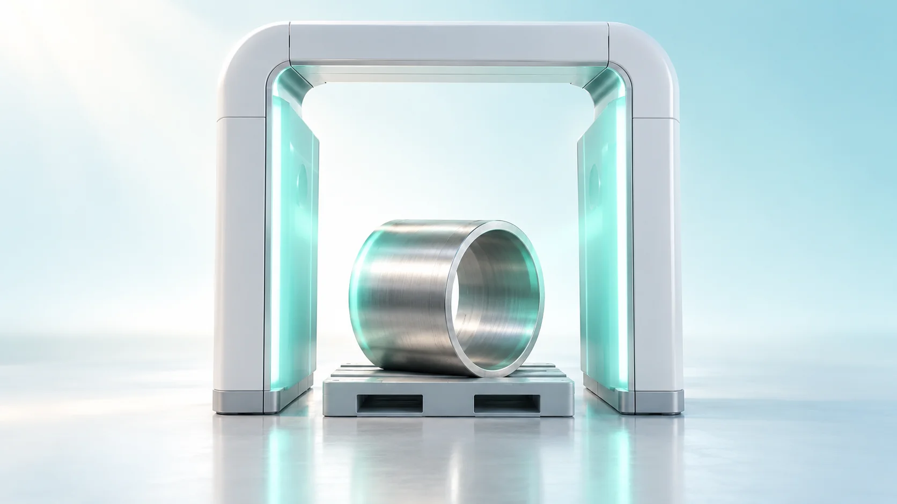
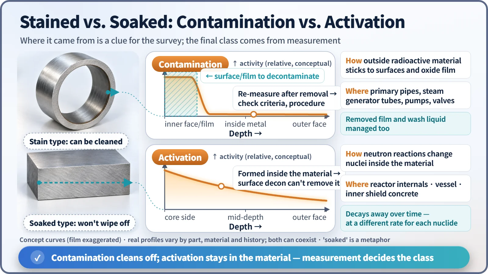
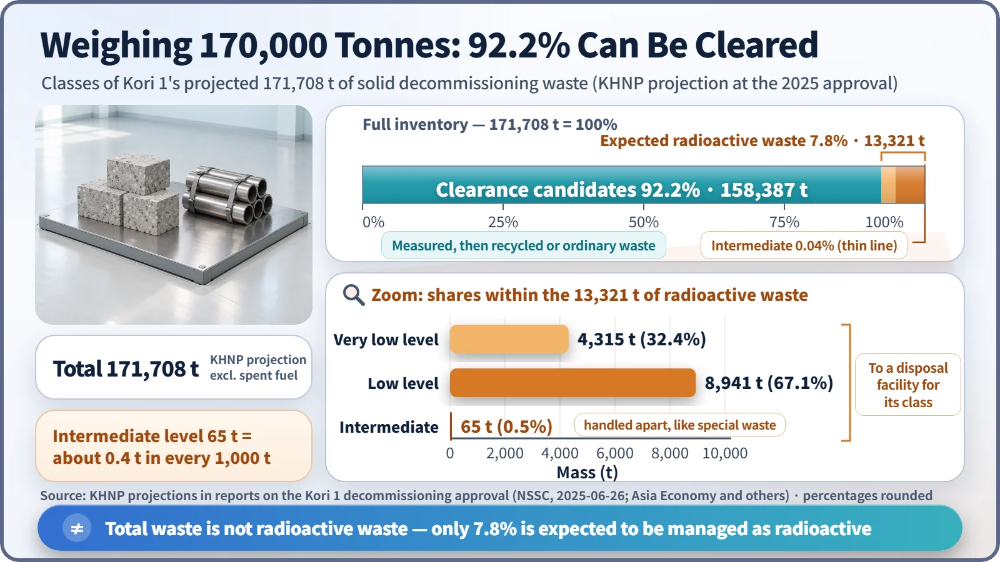

Society, Environment & the Future · 294
Sorted by Numbers, Like Packing for a Move — Classifying Nuclear Decommissioning Waste
Stains on the surface can be cleaned off; activation soaks through the material. Measure, remove, measure again, and most of a dismantled plant leaves the radioactive waste list.

Decommissioning waste is classified by measured radioactivity per gram, not by what the object is. For South Korea's Kori Unit 1, about 92% of the 171,708 tonnes of projected solid waste is expected to be cleared after measurement; only about 7.8% is projected to be managed as radioactive waste. [1]
A headline with a twist
"Kori 1 decommissioning to generate 170,000 tonnes of radioactive waste." When the decommissioning of Kori Unit 1, South Korea's first commercial nuclear power plant, was approved in June 2025, sentences like this appeared in many news stories. 170,000 tonnes weighs more than 100,000 passenger cars. Does all of it have to be buried deep underground?
Read a little further and there is a twist: about 92% of it was projected to leave the radioactive waste list after being measured. The work that produces that twist is classifying nuclear decommissioning waste.
On moving day, your things fall into three piles
As you pack for a move, piles form on their own: things you put out or recycle, bulky items you have to register and pay to dispose of separately, and hazardous items such as old batteries and fluorescent tubes that go into special collection bins.
Decommissioning sorts things into piles too. The difference is the criterion: household belongings are sorted by eye, decommissioning waste by the number on a measuring instrument, in Bq/g (becquerels per gram, the decays per second within one gram). In South Korea the categories come from the Nuclear Safety and Security Commission's notice on waste classification (No. 2025-11). Below the limit, material goes to clearance, released as ordinary waste (South Korean rules call this "self-disposal"). Above it, the classes rise: very low level → low level → intermediate level. [2]
A stained sofa cover vs. wood soaked through
There are two routes by which parts of a plant become radioactive.
The first is contamination. Radioactive material carried by the coolant settles on the surfaces of pipes, steam generator tubes, pumps and valves, or clings to a thin oxide film, like a coffee stain on a sofa cover. Because it sits on the outside, much of it can be removed by decontamination: dissolving it with chemicals or grinding off the surface.
The second is activation. Over decades of operation, materials near the core are bombarded with neutrons, and the atoms in the material themselves become radioactive. Cobalt-59 in steel, for example, absorbs a neutron and becomes cobalt-60. This is wood soaked through to the core; no amount of scrubbing gets it out. Activation is strongest in the reactor internals that held the core, then the reactor vessel wall, then the inner face of the thick biological shield concrete. What ends up classified as intermediate level is mainly these internals. A single component can carry both contamination and activation, so in the end you have to measure. [3]

There is some good news: activation products also decay with their half-lives. Cobalt-60 halves every 5.27 years, something moving boxes never do.
That is why decommissioning starts with characterization: sampling and calculating which parts are radioactive and by how much. Contaminated areas are decontaminated, then pieces are cut out from low radioactivity to high, and each cut piece is measured again to decide its pile.
Putting 170,000 tonnes on the scale
Korea Hydro & Nuclear Power (KHNP) projected 171,708 tonnes of solid waste from decommissioning Kori 1. [1]
| Class | Mass | Share |
|---|---|---|
| Clearance | 158,387 t | about 92.2% |
| Low level | 8,941 t | about 5.2% |
| Very low level | 4,315 t | about 2.5% |
| Intermediate level | 65 t | about 0.04% |
| Total | 171,708 t | 100% |

The amount to be managed as radioactive waste and sent to disposal facilities, very low, low and intermediate level combined, is about 13,300 tonnes, roughly 7.8% of the total. Intermediate level, the trickiest category, is 65 tonnes: about 0.4 tonnes in every 1,000. The "170,000 tonnes" in the headline was the expected amount of all solid waste, not the amount to be managed as radioactive waste.
"Clearance" does not mean dumping it quietly
Clearance is not putting things out any old way. The concentration of each nuclide is measured to confirm it is below the permitted level, which is set so that the dose anyone could receive from that waste stays under 10 μSv per year. Dilution, mixing in clean soil or concrete to meet the limit, is prohibited. Metal that passes can be melted down and reused, and concrete can be crushed and handled as ordinary waste. [2]
Two points are easy to confuse. Very low level waste is not clearance: it has exceeded the permitted level, so it is still radioactive waste and must go to a designated disposal facility. And decommissioning waste contains almost no high-level waste: spent fuel is taken out of the reactor and stored separately before decommissioning, so the highest class among dismantled structures is intermediate level.
Key takeaways
Classifying decommissioning waste means measuring, removing, and measuring again. Contamination sits mainly on surfaces, so decontamination can lower its class (the removed film and cleaning liquids are managed separately); activation is inside the material, so it is managed with time and disposal facilities. For the reference plant, more than nine in ten parts of the solid waste are projected to leave the radioactive waste list. Sorting accurately saves disposal space and returns the site to its next use faster, which is why the success of decommissioning ultimately comes down to sorting.